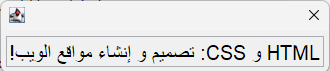

Sometimes a program receives data from the Web that includes important metadata about the language and string direction. Developers working with document formats and protocols on the Web that include language and direction metadata should use this metadata to influence the processing and display of the associated text. This article provides links to documentation in many different operating systems, programming environments, and user experience frameworks. These APIs can then be used to consume language and string direction metadata received on the Web or in other APIs or formats.
For an introduction to the problem of language and string direction, including best practices in creating and managing metadata, see Strings on the Web: Language and Direction Metadata. If you are unfamiliar with bidirectional and right-to-left text, there is a basic introduction here. Please read the article Use cases for bidi and language metadata on the Web for detailed use cases, including a clear illustration of issues such as spillover or locale-based rendering. This section summarises some key points in that document and related to the need for language and direction metadata.
This section links to various APIs and articles about working with bidirectional text in native APIs and display frameworks.
This list is necessarily incomplete: the Internationalization Working Group welcomes contributions and corrections. Click on the link Leave a comment in the Tell us what you think box below.
For example, the Java programming language provides the ability to set the "component orientation" on user interface classes. When combined with base direction metadata, the programmer can make bidirectional strings display properly in native controls. For example:
JTextField field = new JTextField(); field.setComponentOrientation(rtl ? ComponentOrientation.RIGHT_TO_LEFT : ComponentOrientation.LEFT_TO_RIGHT); field.setText(text);
The result of setting the ComponentOrientation might look like:

For cases where the text direction is unknown (or set to auto), the JDK java.text.Bidi class can be used as a mechanism for analyzing text to obtain the component orientation:
private ComponentOrientation getOrientationForUnknownText(String text) {
final int defaultDirection = (ComponentOrientation.getOrientation(Locale.getDefault())
isLeftToRight()) ? Bidi.DIRECTION_DEFAULT_LEFT_TO_RIGHT
: Bidi.DIRECTION_DEFAULT_RIGHT_TO_LEFT;
final Bidi b = new Bidi(text, defaultDirection);
return b.baseIsLeftToRight() ? ComponentOrientation.LEFT_TO_RIGHT
: ComponentOrientation.RIGHT_TO_LEFT;
}
Developing specifications
To contribute suggestions, please click on the link Leave a comment in the box to the right.
Thanks to the following contributors to this document: Fuqiao Xue.